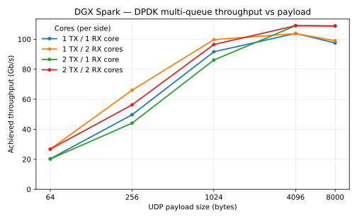

Performance: DGX Spark¶
Measured C++-loopback throughput for each stream/protocol on a single DGX Spark
(GB10), driven over a physical cabled loopback on one ConnectX-7. Numbers are
from a Release build via examples/run_spark_bench.sh (30 s per cell).
All backends are measured one-way (unidirectional) by default: one side sends,
the other receives and computes. For a bidirectional test, set send: true on the
receiving role (and receive: true on the sending role) in the bench config.
For the loopback setup these numbers depend on and the per-transport
benchmarking procedure, see Socket and RDMA Benchmarking
(the dq_wire_* network-namespace wire loopback used by RoCE and sockets) and
Raw Ethernet Benchmarking (the two-physical-port DPDK
loopback). The exact commands are collected under Reproduce below.
System under test¶
| Component | Detail |
|---|---|
| Platform | DGX Spark (GB10), 20 cores, isolcpus 16-19 (the multi-queue sweep expands this, see Multi-queue core scaling) |
| NIC | ConnectX-7, ports p0 ↔ p1 cross-cabled with a 100 GbE QSFP28 loopback cable (single-host loopback), MTU 9000 |
| Build | Release (-DCMAKE_BUILD_TYPE=Release), DAQIRI_ENGINE="dpdk ibverbs" |
| Loopback | Raw/DPDK uses the two physical ports directly, while socket/RoCE use the dq_wire_* network-namespace wire loopback |
| Core pinning | Each direction has a busy-spin queue poller and an app worker on separate isolated X925 cores (PR #149). Single-queue: DPDK pollers 17/18, workers 16/19. Multi-queue: TX pollers 16/19, RX pollers 18/9, each with its own worker core, master 8. Sockets pin each pair's send and receive to separate cores in the same CPU cluster (all with isolcpus=5-9,15-19). |
Results Summary (C++ loopback)¶
Each transport at its best-case operation size. Raw/RoCE are single-stream. Socket TCP/UDP scale with the number of client/server pairs, so the four-pair aggregate is shown.
The 100 GbE QSFP28 loopback cable sets the maximum data rate here, not the ConnectX-7 (which is rated for higher line rates) or the software path. A 100 GbE link tops out near ~99.6 Gb/s of payload, so every large-transfer result saturates just under that ceiling.
| Stream / Protocol | Best case | Throughput | Drops | Notes |
|---|---|---|---|---|
| Raw Ethernet / GPUDirect | 8 KB packet | 98.8 ±0.1 Gb/s | 0 | Flat ~98.7 across 4–8 KB, all batch sizes |
| Socket / RoCE (SEND) | 64 KB message | 97.6 ±0.1 Gb/s | 0 | Single QP, batch 1 |
| Socket / TCP | 8 KB × 4 pairs | 87.3 ±2.2 Gb/s | ~0 | Flow-controlled (App TX = App RX) |
| Socket / UDP | 8 KB × 4 pairs | 34.5 ±0.6 Gb/s | ~48% loss | Receiver goodput, unpaced sender |
Each transport is best read at its own best-case operation size (see the per-transport tables below); a single cross-transport unit of work isn't meaningful here, since RoCE at 8 KB is op-rate-bound well below its large-message peak and TCP has no operation boundary.
Raw Ethernet / GPUDirect (DPDK)¶
Physical port-to-port loopback, GPU-resident payloads. Throughput saturates the 100 GbE line at ~98.8 Gb/s for 4–8 KB payloads, drop-free across all batch sizes. Packet handling is CPU-bound (see the CPU utilization table below). Throughput is flat across batch size and stable run-to-run (3 reps per cell, ≤1% spread).
Achieved Gb/s measured at App RX (equal to App TX, since every cell is drop-free), unpaced, mean of 3 reps. Run-to-run spread ≤0.5 Gb/s (<1%):
| Payload | Batch size (packets per burst) | |||
|---|---|---|---|---|
| 256 | 1024 | 4096 | 10240 | |
| 8000 B | 98.8 | 98.8 | 98.8 | 98.7 |
| 4096 B | 98.6 | 98.8 | 98.7 | 98.6 |
| 1024 B | 97.1 | 97.2 | 97.2 | 97.1 |
| 256 B | 49.7 | 49.6 | 49.6 | 49.5 |
| 64 B | 20.2 | 20.2 | 20.4 | 20.2 |
At ≥1 KB the link saturates near line rate (~97–99 Gb/s) regardless of batch. Below that the path is packet-rate-bound: 256 B ~50 Gb/s (19.5 M pps), 64 B ~20 Gb/s (20 M pps), a ~20 M pps single-queue ceiling (the multi-queue section lifts it). Gb/s here is the L2 frame rate including the 64 B header, so pps ≈ Gb/s ÷ ((payload + 64) × 8). These small-payload cells are flat across batch size and stable run-to-run. Because every cell is drop-free, the achieved rate is also the no-drop rate: pacing the sender below it hits the target with zero drops.
CPU utilization (summary-table cell, 8000 B / batch 10240, unpaced):
| Core | Busy% | Note |
|---|---|---|
| Master (CPU 8) | 3.7% | Orchestration only, mostly idle |
| TX queue poller (CPU 17) | ~92% | Poll-mode busy-spin |
| RX queue poller (CPU 18) | ~92% | Poll-mode busy-spin |
The benchmark app workers run on their own cores (TX 16, RX 19) alongside these pollers. This run sampled only the poller cores. The pollers stay near 92% across every drop-curve step from 1 Gb/s to line rate, because DPDK's poll-mode driver spins regardless of offered load. The GPU stays idle (SM and memory-controller utilization both ~0%): it is a DMA target for the payload, not a compute engine.
Multi-queue core scaling¶
Each packet-handling core spins in poll-mode. At large payloads (≥1 KB) a single
queue already saturates the 100 GbE line (~97–99 Gb/s), so extra cores add
nothing there. The multi-queue win is confined to the small,
packet-rate-bound payloads, where RX cores are the lever. The matrix sweeps
(TX cores, RX cores) over (1,1), (1,2), (2,1), (2,2).
Each queue is served by a poll-mode driver core plus a separate bench-worker
core, paired within one CPU cluster where possible so the poller→worker handoff
stays local. The four-queue matrix uses the expanded isolated-core budget
(isolcpus=5-9,15-19): TX pollers on 16/19, RX pollers on 18/9, each with its
own worker core, and the master on core 8. Configs are derived from the single
base daqiri_bench_raw_tx_rx_spark_mq.yaml (the balanced 2,2 superset) by
scripts/gen_spark_mq_config.py; generated by examples/run_spark_mq_bench.sh,
30 s per cell, 0 drops.
Achieved Gb/s at a 256 B payload (the packet-rate-bound regime where core count matters); at ≥1 KB every cell converges at the wire ceiling regardless:
| Cell | TX pollers | RX pollers | Achieved Gb/s |
|---|---|---|---|
| (1,1) | 16 | 18 | 50.0 |
| (1,2) | 16 | 18,9 | 66.4 |
| (2,1) | 16,19 | 18 | 49.0 |
| (2,2) | 16,19 | 18,9 | 64.7 |
A second RX core lifts 256 B from 50.0 to 66.4 Gb/s, while a second TX core does nothing (49.0 ≈ 50.0). The full payload sweep shows why, since the bottleneck depends on payload size:

At small payloads the path is packet-rate-bound, so RX cores are the lever:
a second RX core lifts 64 B from 20.3 to 26.9 Gb/s (~20 M → ~27 M pps) and 256 B
from 50.0 to 66.4 Gb/s, while a second TX core does nothing. At large payloads a
single queue already saturates the wire, so all four cells converge near
~97–99 Gb/s at ≥1 KB and neither extra core helps. Every cell is drop-free.
Generated by
examples/run_spark_mq_bench.sh (30 s per point) and
scripts/plot_mq_payload_sweep.py.
Socket / RoCE¶
RoCE SEND over the netns wire loopback, single queue-pair, batch 1. Throughput is App RX goodput, equal to App TX with 0 drops. Large messages up to 64 KB saturate the wire, while the smallest messages are bound by per-operation software overhead.
Message-size sweep (single QP, batch 1, 0 drops). Mean ± sample std over 3 reps. Run-to-run spread <1% in every cell.
| Message size | Gb/s |
|---|---|
| 8 MB | 96.8 ±0.3 |
| 1 MB | 96.9 ±0.2 |
| 64 KB | 97.6 ±0.1 |
| 8 KB | 51.8 ±0.2 |
| 4 KB | 28.5 ±0.0 |
Messages ≥64 KB hold ~97 Gb/s at the 100 GbE wire ceiling (line rate). Below that
the path is operation-rate-bound (per-operation software overhead, not a stall)
rather than wire-bound, and every cell is drop-free. At 8 KB (51.8 Gb/s) and 4 KB (28.5 Gb/s)
a dedicated bench-worker core, separate from the RoCE engine thread, sustains the
operation rate, as it does for small DPDK packets. A per-message flow-control
window keeps enough operations in flight to amortize that overhead: it pre-posts
rx_depth receives before sending and caps the transmit side at tx_depth, each
sized to the message so the in-flight window stays full.
CPU utilization (summary-table cell, 8 MB message, batch 1, unpaced):
| Core | Busy% | Note |
|---|---|---|
| Master (CPU 8) | 0.7% | Orchestration only |
| Client TX (CPU 17) | 74.8% | Busy-spins posting sends and polling completions |
| Server RX (CPU 19) | 1.1% | HCA DMAs straight to memory, worker only reaps completions |
The TX core busy-spins in a post-and-poll loop, so its ~75% busy time is set by that spin, not by the throughput: it stays near this level whether the link runs at 10 or 100 Gb/s (the same reason the DPDK pollers sit near 92% regardless of offered load). The near-idle RX core is the expected RoCE RC signature. The HCA places incoming data directly into registered memory, so the receive worker only reaps completions and reposts (~1% at this message rate). The GPU stays idle here too (SM and memory-controller ~0%; DMA target, not a compute engine).
Socket / TCP¶
Four one-way TCP client/server pairs over the netns wire loopback. Each pair's
send (client) and receive (server) sides pin to separate isolated cores in one
CPU cluster (pairs 1–2 in 15–19, pairs 3–4 in 5–9). A shared send/receive core
ping-pongs a single stream and can wedge it at half rate for a whole run, so
splitting the two sides keeps single-stream throughput stable. TCP self-paces via
flow control, so App TX equals App RX with effectively no app-level loss.
message_size is the per-send byte count of a stream (no datagram boundary, no
fragmentation).
Throughput in Gb/s (App TX = App RX), mean ± std over 3 reps:
| Message size | Number of client/server pairs | ||
|---|---|---|---|
| 1 | 2 | 4 | |
| 1000 B | 14.2±0.4 | 27.6±0.4 | 45.2±0.1 |
| 8000 B | 28.9±2.9 | 42.4±2.7 | 87.3±2.2 |
| 1 MiB | 32.1±2.2 | 51.5±2.4 | 83.7±0.4 |
Throughput scales with the pair count, and retransmits stay negligible over the run. At four pairs the eight cores span both clusters, and the pairs in 5–9 sit farther from the NIC, so the 4-pair cells scale slightly sub-linearly.
Socket / UDP¶
Four one-way UDP client/server pairs, same per-side pinning (send and receive on
separate cores). UDP has no flow control, so each sender runs flat-out and the
receiver drops whatever it cannot drain, and the loss column is an inherent property
of unpaced UDP. App RX is the delivered goodput; App-level loss is
(App TX − App RX) / App TX.
Each cell shows receiver goodput in Gb/s (mean ± std over 3 reps) with the app-level loss % dimmed beneath it:
| Message size | Number of client/server pairs | ||
|---|---|---|---|
| 1 | 2 | 4 | |
| 1000 B | 4.0 ±0.144% loss | 6.8 ±0.852% loss | 15.2 ±0.340% loss |
| 8000 B | 12.2 ±1.269% loss | 18.9 ±0.259% loss | 34.5 ±0.648% loss |
The sweep stops at 8000 B (single Ethernet frame). Larger UDP datagrams fragment above the ~8972 B MTU payload. Reassembly is all-or-nothing out of a shared per-namespace pool, so under multi-pair unpaced load delivery collapses (≈100% loss at 65507 B / 4 pairs). The wire itself is loss-free here. The loss is host-side socket-buffer and reassembly pressure.
GPU workloads in the receive path¶
A common question for a GPU-attached receiver is how much line rate it holds while
the GPU also crunches the incoming data. The benchmarks accept
--workload none|fft|gemm|gemm_fp16, exposed by run_spark_bench.sh as the
WORKLOAD env var (recorded in the CSV post_process column); more workload kinds
can be added to the same reusable component over time. The workload runs on the
received packet data. Every backend first assembles the burst's
payloads into one contiguous GPU buffer (a sequence-number reorder on the
out-of-order transports, an arrival-order gather on the in-order ones) and the
compute consumes that buffer.
What the two workloads compute, both in FP32 (single precision), from the
reusable component examples/bench_workload.{h,cu}:
- FFT: a batched 1-D complex-to-complex forward FFT via cuFFT
(
cufftExecC2C). The reordered buffer is treated as an array of single-precision complex samples and transformed as many independent length-1024 FFTs, batched so the transforms cover the whole reorder window. This models a streaming signal-processing receiver, such as channelization or spectral analysis that FFTs every frame as it arrives. - GEMM: a dense matrix multiply
C = A·Bvia cuBLAS on square n×n matrices, with the reordered buffer supplying the A operand. The side length is pinned at n=1024 (--workload-gemm-dim, envGEMM_DIM), so every call is an identical 2.15 GFLOP matmul reading the first 4 MB (n²·4 B, FP32) of each received unit. The compute is fixed regardless of message size, which is what makes it comparable across transports. The matmul is FP32 (cublasSgemm). This models a receiver feeding incoming data into a dense linear-algebra or neural-network stage (beamforming, correlation, an inference layer).
The reorder/gather step is per-backend (examples/bench_pipeline.{h,cu}),
chosen to be representative for each transport:
| Backend | Payload source | Pre-workload step |
|---|---|---|
| Raw / GPUDirect (DPDK) | GPU-accessible RX buffers | seq reorder kernel → contiguous device buffer (out-of-order capable) |
| RoCE (RC) | GPU-accessible recv MR | gather (in-order); one large message is a zero-copy pass-through |
| UDP sockets | host RX buffers | host→device stage, then seq reorder |
| TCP sockets | host RX buffers | host→device stage, then gather (in-order stream) |
Each compute runs once per reorder window on a dedicated CUDA stream, shared with the reorder/gather kernel so the two serialize without an extra sync and compute overlaps ingest. The reorder window is sized so the contiguous buffer is ~8 MB on every backend, giving a comparable GPU working set across transports.
Where the data lives, per backend
On the integrated GB10 the GPU shares memory with the CPU, so the raw and RoCE
receive buffers (host_pinned) are GPU-accessible with no copy, and the
reorder/gather kernel reads them in place. Sockets are different: the kernel
hands received bytes to the application in pageable host memory, so the socket
path must stage each payload host→device before the GPU can touch it, a
copy on the measured path that the raw/RoCE paths avoid. Lost packets (raw/UDP)
leave their reorder slots zero-filled, and the FLOP/copy volume is unchanged.
Fixed n=1024, one GEMM (or a length-1024 batched FFT) per received unit. DPDK runs
at an 8 KB payload (~8 MB reorder window, 1024 packets × 8000 B), matched to RoCE's
8 MB message so the GPU working set and per-unit compute are the same on both.
3 reps, 30 s each, GPU SM% from nvidia-smi dmon; 0 drops on every cell.
| Workload | DPDK (Raw / GPUDirect) | RoCE (RC) |
|---|---|---|
| none (baseline) | 98.7 ±0.0 | 96.6 ±0.3 |
| FFT | 95.7 ±0.8 | 95.6 ±0.1 |
| GEMM (FP32) | 96.6 ±0.2 | 90.2 ±1.1 |
Throughput in Gb/s. Both none baselines sit at the ~97–99 Gb/s wire ceiling
(DPDK 98.7, RoCE 96.6), as expected for two line-rate transports.
GPU compute dents line rate only modestly, and stays wire-limited, not compute-limited (SM well under 100% throughout). FFT is nearly free on both (SM ~6–17%, ≤1 Gb/s off baseline). The reorder/gather step assembles each unit's payload into one contiguous GPU buffer.
Reproduce¶
Run inside the project container (privileged, GPUs passed through, hugepages
mounted), as root. Build with -DCMAKE_BUILD_TYPE=Release and
cmake --install build so the bench loads the current libdaqiri.so.
The base container does not ship the network tools the setup scripts and RoCE
baseline depend on. Install them first, or
scripts/setup_spark_wire_loopback_netns.sh fails with ip: command not found:
apt-get update
apt-get install -y iproute2 iputils-ping ethtool iperf3 rdma-core ibverbs-utils perftest
These provide ip/nstat (iproute2), ethtool, and ib_send_bw (perftest).
Each run_spark_bench.sh <backend> <mode> invocation takes a mode that sets
which cells run: sweep runs the full payload × batch × pairs matrix (the
per-transport message-size tables above), while smoke runs just the single
summary-table cell, one payload/batch/pairs operating point. REPEATS=N repeats
every cell N times for error bars.
Raw Ethernet / GPUDirect (DPDK) drives the two physical ports directly, so
the dq_wire_* namespaces must not be up, since they capture the ports and
hide them from DPDK. Tear them down first (no-op if they were never created).
<rx-iface> below is the RX physical port (p1 in the p0→p1 loopback):
./scripts/setup_spark_wire_loopback_netns.sh down # ensure netns is torn down
export ETH_DST_ADDR=$(cat /sys/class/net/<rx-iface>/address)
./examples/run_spark_bench.sh dpdk sweep
The multi-queue core-scaling matrix and payload sweep run on the same
physical loopback (netns down). The four cells are generated from
examples/daqiri_bench_raw_tx_rx_spark_mq.yaml at run time, so just export the
rx-iface MAC as ETH_DST_ADDR (the script fills it into each generated config),
then run the sweep and render the plot:
export ETH_DST_ADDR=$(cat /sys/class/net/<rx-iface>/address)
./examples/run_spark_mq_bench.sh # 4 cells x payload sweep, 30 s each
# render the line plot (needs matplotlib in a venv -- not a runtime dependency):
./scripts/plot_mq_payload_sweep.py bench-results/<timestamp>-dpdk-mq/runs.csv
Socket / RoCE and sockets cross the cable through the dq_wire_client →
dq_wire_server namespaces. Bring the loopback up and confirm PHY counters move
before running, and tear it down when finished:
./scripts/setup_spark_wire_loopback_netns.sh up # create the namespaces
./scripts/setup_spark_wire_loopback_netns.sh verify # confirm wire traffic
./examples/run_spark_bench.sh rdma sweep
./examples/run_spark_bench.sh socket-tcp sweep
./examples/run_spark_bench.sh socket-udp sweep
./scripts/setup_spark_wire_loopback_netns.sh down # tear down when done
GPU workload (FFT / GEMM) re-runs a backend with a representative GPU workload
in the receive path by exporting WORKLOAD (none | fft | gemm |
gemm_fp16), run once per received I/O unit on the real payload. Each call is a
fixed 1024³ GEMM (override with GEMM_DIM / --workload-gemm-dim) or a batched
length-1024 FFT (override with FFT_LEN / --workload-fft-len). Both compute
sizes are held constant while the message size varies, so the FLOP count per call
is fixed. It composes with the same netns setup as above (dpdk in the default
namespace, rdma in the dq_wire_* namespaces). Use smoke, the single
summary-table cell that the fixed-n table reports, and run all three workloads
with error bars:
# RoCE (netns up); Raw is identical with `dpdk`, netns down, ETH_DST_ADDR exported.
for WL in none fft gemm; do
WORKLOAD=$WL REPEATS=3 ./examples/run_spark_bench.sh rdma smoke
done
In the workload case the payload size is fixed per backend (8 KB for DPDK, 8 MB
message for RoCE), so a sweep only steps through batch size (DPDK) or
client/server pairs (sockets). The workload lands in the CSV post_process column
(with the GEMM dimension in post_process_gemm_dim); compare each gbps /
gpu_sm_pct against the WORKLOAD=none baseline from the same loop.
Each run writes bench-results/<timestamp>-<backend>-<mode>/runs.csv. See
Socket and RDMA Benchmarking and
Raw Ethernet Benchmarking for the namespace setup and
per-transport details.